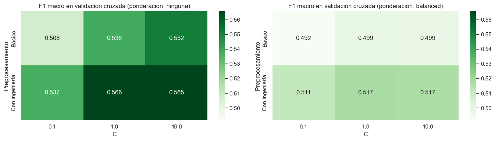
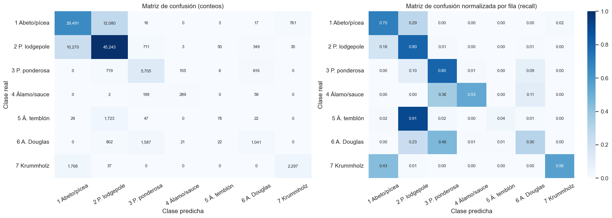
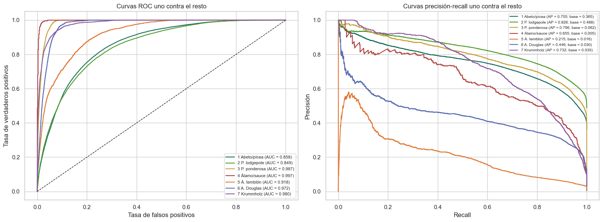
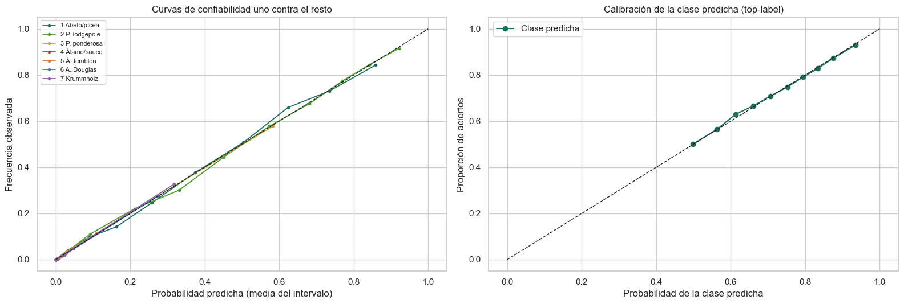
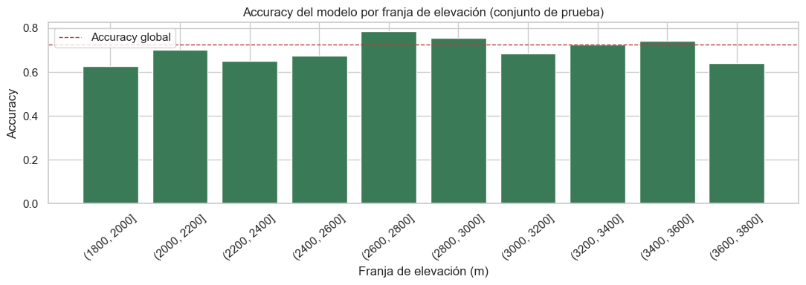
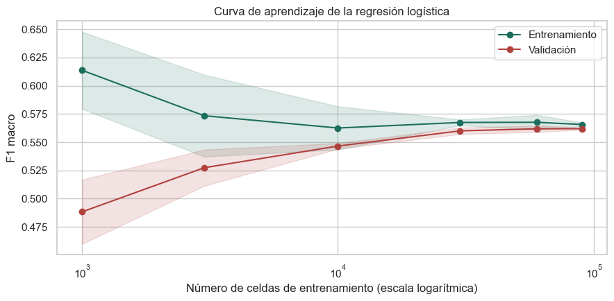
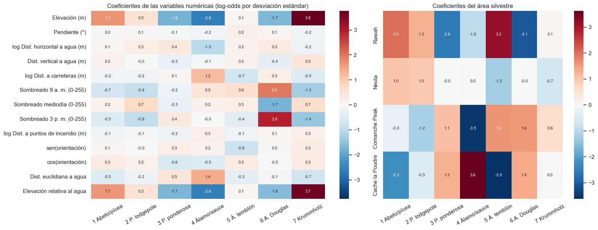

3. Modelo base#
Este capítulo construye la referencia de desempeño del proyecto. Se compara una línea base trivial (DummyClassifier) con un modelo base de regresión logística multinomial entrenado dentro de un Pipeline, se eligen sus hiperparámetros con validación cruzada estratificada y se evalúa una única vez sobre el conjunto de prueba reservado en la sección 1.6.
Show code cell source
import time
import warnings
warnings.filterwarnings("ignore")
import numpy as np
import pandas as pd
import matplotlib.pyplot as plt
import seaborn as sns
from sklearn.calibration import calibration_curve
from sklearn.dummy import DummyClassifier
from sklearn.ensemble import HistGradientBoostingClassifier
from sklearn.metrics import (
accuracy_score, average_precision_score, balanced_accuracy_score, classification_report,
confusion_matrix, f1_score, log_loss, precision_recall_curve, precision_score,
recall_score, roc_auc_score, roc_curve,
)
from sklearn.model_selection import (
GridSearchCV, GroupKFold, StratifiedKFold, cross_validate, learning_curve,
)
from sklearn.preprocessing import label_binarize
from _utils import (
CLASS_NAMES, CLASS_PALETTE, CLASS_SHORT, DISPLAY_NAMES, ENG_NUM_COLS, RANDOM_STATE,
SOIL_COLS, WILD_COLS, WILD_NAMES, build_logreg, build_preprocessor, load_covertype,
split_covertype, stratified_sample, wilderness_label,
)
sns.set_theme(style="whitegrid", context="notebook")
CLASES = list(range(1, 8))
df, X, y = load_covertype()
X_train, X_test, y_train, y_test = split_covertype(X, y)
cv5 = StratifiedKFold(n_splits=5, shuffle=True, random_state=RANDOM_STATE)
3.1 Variable objetivo y esquema de evaluación#
Variable objetivo:
Cover_Type, tipo de cobertura forestal dominante, con siete clases nominales (sección 1.4).Partición: 80 % entrenamiento y 20 % prueba, estratificada por clase y con semilla 42, definida antes de cualquier preprocesamiento (sección 1.6).
Validación cruzada:
StratifiedKFoldcon 5 pliegues, del mismo tipo que la partición. Como prueba de sensibilidad espacial se usa ademásGroupKFoldpor área silvestre (sección 3.8).Métrica de selección: F1 macro, porque da el mismo peso a las siete clases y no premia al modelo que ignora las minoritarias (sección 2.1). Se reportan también accuracy, exactitud balanceada, precisión y recall macro, F1 ponderado, AUC uno contra el resto y log loss.
3.2 Línea base trivial#
Se evalúan tres estrategias de DummyClassifier: predecir siempre la clase más frecuente, predecir al azar respetando las proporciones de clase (estratificada) y predecir al azar con probabilidad uniforme.
Show code cell source
def metricas(y_true, pred, proba):
"""Métricas de clasificación multiclase usadas en todo el capítulo."""
return {
"Accuracy": accuracy_score(y_true, pred),
"Exactitud balanceada": balanced_accuracy_score(y_true, pred),
"Precisión macro": precision_score(y_true, pred, average="macro", zero_division=0),
"Recall macro": recall_score(y_true, pred, average="macro", zero_division=0),
"F1 macro": f1_score(y_true, pred, average="macro", zero_division=0),
"F1 ponderado": f1_score(y_true, pred, average="weighted", zero_division=0),
"AUC OvR macro": roc_auc_score(y_true, proba, multi_class="ovr", average="macro"),
"Log loss": log_loss(y_true, proba, labels=CLASES),
}
dummies = {
"Dummy (más frecuente)": DummyClassifier(strategy="most_frequent"),
"Dummy (estratificado)": DummyClassifier(strategy="stratified", random_state=RANDOM_STATE),
"Dummy (uniforme)": DummyClassifier(strategy="uniform", random_state=RANDOM_STATE),
}
res_test = {}
for nombre, modelo in dummies.items():
modelo.fit(X_train, y_train)
res_test[nombre] = metricas(y_test, modelo.predict(X_test), modelo.predict_proba(X_test))
pd.DataFrame(res_test).T.round(3)
| Accuracy | Exactitud balanceada | Precisión macro | Recall macro | F1 macro | F1 ponderado | AUC OvR macro | Log loss | |
|---|---|---|---|---|---|---|---|---|
| Dummy (más frecuente) | 0.488 | 0.143 | 0.070 | 0.143 | 0.094 | 0.320 | 0.500 | 18.469 |
| Dummy (estratificado) | 0.374 | 0.141 | 0.141 | 0.141 | 0.141 | 0.374 | 0.499 | 22.561 |
| Dummy (uniforme) | 0.143 | 0.145 | 0.142 | 0.145 | 0.094 | 0.191 | 0.500 | 1.946 |
El clasificador que siempre predice pino lodgepole alcanza cerca del 49 % de accuracy, pero su F1 macro es de apenas 0,09 y su exactitud balanceada es exactamente 1/7 (0,143), porque acierta en una clase y falla en las otras seis. Esta es la referencia mínima que cualquier modelo útil debe superar con claridad, sobre todo en las métricas que ponderan todas las clases por igual.
3.3 Selección de hiperparámetros#
Se busca en una rejilla la mejor combinación de:
Preprocesamiento: básico (solo escalado) o con ingeniería de variables (sección 2.9).
Regularización: inverso de la fuerza de regularización L2, \(C \in \{0{,}1;\ 1;\ 10\}\).
Ponderación de clases: sin ponderación o
class_weight="balanced".
Cada una de las 12 combinaciones se evalúa con validación cruzada estratificada de 5 pliegues. Ajustar una regresión logística sobre las 464.809 celdas de entrenamiento toma varios minutos, así que la búsqueda se hace sobre una submuestra estratificada de 30.000 celdas del entrenamiento. La curva de aprendizaje de la sección 3.9 muestra que el desempeño de la regresión logística ya está prácticamente estabilizado con ese tamaño de muestra, de modo que la submuestra no cambia la elección de hiperparámetros. El modelo final sí se entrena con todo el conjunto de entrenamiento.
Show code cell source
X_sub, y_sub = stratified_sample(X_train, y_train, 30000)
rejilla = {
"prep": [build_preprocessor(engineered=False), build_preprocessor(engineered=True)],
"clf__C": [0.1, 1.0, 10.0],
"clf__class_weight": [None, "balanced"],
}
busqueda = GridSearchCV(
build_logreg(),
rejilla,
scoring={"f1_macro": "f1_macro", "accuracy": "accuracy", "balanced_accuracy": "balanced_accuracy"},
refit=False,
cv=cv5,
n_jobs=-1,
)
inicio = time.time()
busqueda.fit(X_sub, y_sub)
print(f"Tiempo de la búsqueda: {time.time() - inicio:.0f} s")
cvr = pd.DataFrame(busqueda.cv_results_)
cvr["Preprocesamiento"] = np.where(cvr["param_prep"].astype(str).str.startswith("Pipeline"), "Con ingeniería", "Básico")
cvr["Ponderación"] = cvr["param_clf__class_weight"].fillna("ninguna").astype(str)
tabla_cv = cvr[["Preprocesamiento", "param_clf__C", "Ponderación", "mean_test_f1_macro", "std_test_f1_macro",
"mean_test_accuracy", "mean_test_balanced_accuracy"]].rename(columns={
"param_clf__C": "C", "mean_test_f1_macro": "F1 macro (media)", "std_test_f1_macro": "F1 macro (desv.)",
"mean_test_accuracy": "Accuracy (media)", "mean_test_balanced_accuracy": "Exactitud balanceada (media)",
}).sort_values("F1 macro (media)", ascending=False).reset_index(drop=True)
tabla_cv.round(4)
Tiempo de la búsqueda: 82 s
| Preprocesamiento | C | Ponderación | F1 macro (media) | F1 macro (desv.) | Accuracy (media) | Exactitud balanceada (media) | |
|---|---|---|---|---|---|---|---|
| 0 | Con ingeniería | 1.0 | ninguna | 0.5658 | 0.0128 | 0.7229 | 0.5376 |
| 1 | Con ingeniería | 10.0 | ninguna | 0.5653 | 0.0127 | 0.7230 | 0.5386 |
| 2 | Básico | 10.0 | ninguna | 0.5517 | 0.0169 | 0.7223 | 0.5282 |
| 3 | Básico | 1.0 | ninguna | 0.5380 | 0.0148 | 0.7211 | 0.5140 |
| 4 | Con ingeniería | 0.1 | ninguna | 0.5371 | 0.0137 | 0.7220 | 0.5058 |
| 5 | Con ingeniería | 1.0 | balanced | 0.5174 | 0.0047 | 0.6023 | 0.7062 |
| 6 | Con ingeniería | 10.0 | balanced | 0.5170 | 0.0065 | 0.6023 | 0.7047 |
| 7 | Con ingeniería | 0.1 | balanced | 0.5112 | 0.0051 | 0.5996 | 0.7012 |
| 8 | Básico | 0.1 | ninguna | 0.5075 | 0.0146 | 0.7202 | 0.4799 |
| 9 | Básico | 1.0 | balanced | 0.4993 | 0.0037 | 0.5979 | 0.6977 |
| 10 | Básico | 10.0 | balanced | 0.4989 | 0.0038 | 0.5974 | 0.6963 |
| 11 | Básico | 0.1 | balanced | 0.4920 | 0.0033 | 0.5942 | 0.6905 |
Show code cell source
fig, axes = plt.subplots(1, 2, figsize=(14, 4))
for ax, pond in zip(axes, ["ninguna", "balanced"]):
piv = tabla_cv[tabla_cv["Ponderación"] == pond].pivot(index="Preprocesamiento", columns="C", values="F1 macro (media)")
sns.heatmap(piv, annot=True, fmt=".3f", cmap="Greens", ax=ax, vmin=tabla_cv["F1 macro (media)"].min(),
vmax=tabla_cv["F1 macro (media)"].max())
ax.set_title(f"F1 macro en validación cruzada (ponderación: {pond})")
plt.tight_layout()
plt.show()
mejor = tabla_cv.iloc[0]
MEJOR_ENG = mejor["Preprocesamiento"] == "Con ingeniería"
MEJOR_C = float(mejor["C"])
MEJOR_CW = None if mejor["Ponderación"] == "ninguna" else "balanced"
print(f"Mejor configuración: preprocesamiento {mejor['Preprocesamiento'].lower()}, C = {MEJOR_C}, "
f"ponderación = {mejor['Ponderación']} (F1 macro = {mejor['F1 macro (media)']:.3f} ± {mejor['F1 macro (desv.)']:.3f})")

Mejor configuración: preprocesamiento con ingeniería, C = 1.0, ponderación = ninguna (F1 macro = 0.566 ± 0.013)
Tres conclusiones se desprenden de la búsqueda:
La ingeniería de variables mejora el modelo en todas las combinaciones de \(C\) y ponderación. La representación circular de la orientación, el logaritmo de las distancias y las dos variables nuevas de posición respecto al agua aportan información que la regresión logística no puede construir por sí sola, porque es lineal en sus entradas.
La regularización tiene poco efecto para \(C \geq 1\): con más de 20.000 observaciones por predictora, la varianza del estimador es baja y la penalización deja de ser determinante. Solo la regularización más fuerte (\(C = 0{,}1\)) reduce un poco el desempeño.
La ponderación de clases implica un compromiso claro. Con
class_weight="balanced"la exactitud balanceada sube de forma notable, porque el modelo detecta mucho mejor las clases minoritarias, pero el accuracy y el F1 macro bajan, porque el modelo empieza a asignar muchas celdas de las clases mayoritarias a las minoritarias y su precisión en estas cae. Según el criterio de selección definido (F1 macro), el modelo base se entrena sin ponderación; la versión ponderada se evalúa también en prueba (sección 3.6) para documentar el compromiso.
3.4 Entrenamiento del modelo final#
Show code cell source
inicio = time.time()
modelo = build_logreg(engineered=MEJOR_ENG, C=MEJOR_C, class_weight=MEJOR_CW, max_iter=3000)
modelo.fit(X_train, y_train)
print(f"Tiempo de entrenamiento con {len(X_train):,} celdas: {time.time() - inicio:.0f} s".replace(",", "."))
print(f"Iteraciones del optimizador: {modelo.named_steps['clf'].n_iter_[0]} (máximo 3000)")
X_cv, y_cv = stratified_sample(X_train, y_train, 100000)
cv_final = cross_validate(
build_logreg(engineered=MEJOR_ENG, C=MEJOR_C, class_weight=MEJOR_CW, max_iter=3000),
X_cv, y_cv, cv=cv5, n_jobs=-1, return_train_score=True,
scoring={"accuracy": "accuracy", "f1_macro": "f1_macro", "balanced_accuracy": "balanced_accuracy"},
)
resumen_cv = pd.DataFrame(
{
"Entrenamiento (media)": [cv_final[f"train_{m}"].mean() for m in ["accuracy", "f1_macro", "balanced_accuracy"]],
"Validación (media)": [cv_final[f"test_{m}"].mean() for m in ["accuracy", "f1_macro", "balanced_accuracy"]],
"Validación (desv. est.)": [cv_final[f"test_{m}"].std() for m in ["accuracy", "f1_macro", "balanced_accuracy"]],
},
index=["Accuracy", "F1 macro", "Exactitud balanceada"],
).round(4)
resumen_cv
Tiempo de entrenamiento con 464.809 celdas: 176 s
Iteraciones del optimizador: 1220 (máximo 3000)
| Entrenamiento (media) | Validación (media) | Validación (desv. est.) | |
|---|---|---|---|
| Accuracy | 0.7278 | 0.7270 | 0.0026 |
| F1 macro | 0.5660 | 0.5631 | 0.0118 |
| Exactitud balanceada | 0.5383 | 0.5367 | 0.0118 |
La tabla muestra la validación cruzada estratificada de 5 pliegues del modelo elegido sobre una submuestra de 100.000 celdas. Las métricas de entrenamiento y validación son prácticamente iguales y la desviación estándar entre pliegues es muy pequeña, lo que indica un modelo estable y sin sobreajuste. Si el modelo tiene alguna limitación, es de sesgo (su forma lineal es demasiado simple), no de varianza.
3.5 Evaluación en el conjunto de prueba#
Métricas globales con intervalos de confianza#
Los intervalos de confianza del 95 % se obtienen con bootstrap percentil: se remuestrean con reemplazo las 116.203 celdas de prueba 200 veces y se recalcula cada métrica.
Show code cell source
pred = modelo.predict(X_test)
proba = modelo.predict_proba(X_test)
res_test["Regresión logística"] = metricas(y_test, pred, proba)
rng = np.random.default_rng(RANDOM_STATE)
yt = y_test.to_numpy()
boot = {m: [] for m in ["Accuracy", "Exactitud balanceada", "F1 macro", "AUC OvR macro"]}
for _ in range(200):
i = rng.integers(0, len(yt), len(yt))
boot["Accuracy"].append(accuracy_score(yt[i], pred[i]))
boot["Exactitud balanceada"].append(balanced_accuracy_score(yt[i], pred[i]))
boot["F1 macro"].append(f1_score(yt[i], pred[i], average="macro"))
boot["AUC OvR macro"].append(roc_auc_score(yt[i], proba[i], multi_class="ovr", average="macro"))
ic = pd.DataFrame(
{
"Estimación": [res_test["Regresión logística"][m] for m in boot],
"IC 95 % inferior": [np.percentile(v, 2.5) for v in boot.values()],
"IC 95 % superior": [np.percentile(v, 97.5) for v in boot.values()],
},
index=list(boot),
).round(4)
ic
| Estimación | IC 95 % inferior | IC 95 % superior | |
|---|---|---|---|
| Accuracy | 0.7241 | 0.7216 | 0.7266 |
| Exactitud balanceada | 0.5314 | 0.5245 | 0.5380 |
| F1 macro | 0.5571 | 0.5506 | 0.5638 |
| AUC OvR macro | 0.9373 | 0.9363 | 0.9383 |
Show code cell source
comparacion = pd.DataFrame(res_test).T[
["Accuracy", "Exactitud balanceada", "Precisión macro", "Recall macro", "F1 macro", "F1 ponderado", "AUC OvR macro", "Log loss"]
]
comparacion.round(3)
| Accuracy | Exactitud balanceada | Precisión macro | Recall macro | F1 macro | F1 ponderado | AUC OvR macro | Log loss | |
|---|---|---|---|---|---|---|---|---|
| Dummy (más frecuente) | 0.488 | 0.143 | 0.070 | 0.143 | 0.094 | 0.320 | 0.500 | 18.469 |
| Dummy (estratificado) | 0.374 | 0.141 | 0.141 | 0.141 | 0.141 | 0.374 | 0.499 | 22.561 |
| Dummy (uniforme) | 0.143 | 0.145 | 0.142 | 0.145 | 0.094 | 0.191 | 0.500 | 1.946 |
| Regresión logística | 0.724 | 0.531 | 0.652 | 0.531 | 0.557 | 0.716 | 0.937 | 0.627 |
Show code cell source
base = res_test["Dummy (más frecuente)"]
lr = res_test["Regresión logística"]
mejoras = pd.DataFrame(
{
"Dummy (más frecuente)": [base[m] for m in ["Accuracy", "Exactitud balanceada", "F1 macro", "AUC OvR macro"]],
"Regresión logística": [lr[m] for m in ["Accuracy", "Exactitud balanceada", "F1 macro", "AUC OvR macro"]],
},
index=["Accuracy", "Exactitud balanceada", "F1 macro", "AUC OvR macro"],
)
mejoras["Mejora absoluta"] = mejoras["Regresión logística"] - mejoras["Dummy (más frecuente)"]
mejoras.round(3)
| Dummy (más frecuente) | Regresión logística | Mejora absoluta | |
|---|---|---|---|
| Accuracy | 0.488 | 0.724 | 0.237 |
| Exactitud balanceada | 0.143 | 0.531 | 0.389 |
| F1 macro | 0.094 | 0.557 | 0.463 |
| AUC OvR macro | 0.500 | 0.937 | 0.437 |
La regresión logística supera ampliamente a todas las líneas base triviales en todas las métricas: gana 23,7 puntos de accuracy (0,724 frente a 0,488), 38,9 puntos de exactitud balanceada y 46,3 puntos de F1 macro sobre el clasificador de la clase más frecuente. Los intervalos de confianza son estrechos (alrededor de medio punto porcentual de amplitud para el accuracy) gracias al tamaño del conjunto de prueba. Las métricas de prueba coinciden con las de validación cruzada (0,727 de accuracy y 0,563 de F1 macro), lo que confirma que la estimación no está sesgada por la selección de hiperparámetros.
Sin embargo, la brecha entre el accuracy (0,72) y la exactitud balanceada o el F1 macro (0,53 y 0,56) revela que el buen desempeño global descansa sobre las clases mayoritarias. El AUC uno contra el resto es alto (0,94), lo que indica que el modelo ordena bien las celdas según su probabilidad de pertenecer a cada clase, aunque la regla de asignar la clase con mayor probabilidad favorece a las clases frecuentes.
Desempeño por clase#
Show code cell source
reporte = pd.DataFrame(classification_report(y_test, pred, output_dict=True, zero_division=0)).T
reporte = reporte.loc[[str(k) for k in CLASES]]
reporte.index = [CLASS_SHORT[k] for k in CLASES]
reporte.columns = ["Precisión", "Recall", "F1", "Soporte"]
reporte["Soporte"] = reporte["Soporte"].astype(int)
reporte.round(3)
| Precisión | Recall | F1 | Soporte | |
|---|---|---|---|---|
| 1 Abeto/pícea | 0.710 | 0.696 | 0.703 | 42368 |
| 2 P. lodgepole | 0.747 | 0.798 | 0.772 | 56661 |
| 3 P. ponderosa | 0.690 | 0.798 | 0.740 | 7151 |
| 4 Álamo/sauce | 0.691 | 0.526 | 0.598 | 549 |
| 5 Á. temblón | 0.491 | 0.041 | 0.076 | 1899 |
| 6 A. Douglas | 0.495 | 0.300 | 0.373 | 3473 |
| 7 Krummholz | 0.743 | 0.560 | 0.638 | 4102 |
Matriz de confusión#
Show code cell source
cm = confusion_matrix(y_test, pred, labels=CLASES)
cm_norm = cm / cm.sum(axis=1, keepdims=True)
etiquetas = [CLASS_SHORT[k] for k in CLASES]
fig, axes = plt.subplots(1, 2, figsize=(17, 6))
sns.heatmap(cm, annot=True, fmt=",d", cmap="Blues", ax=axes[0], xticklabels=etiquetas, yticklabels=etiquetas,
cbar=False, annot_kws={"size": 8})
axes[0].set_title("Matriz de confusión (conteos)")
sns.heatmap(cm_norm, annot=True, fmt=".2f", cmap="Blues", ax=axes[1], xticklabels=etiquetas, yticklabels=etiquetas,
vmin=0, vmax=1, annot_kws={"size": 8})
axes[1].set_title("Matriz de confusión normalizada por fila (recall)")
for ax in axes:
ax.set_xlabel("Clase predicha")
ax.set_ylabel("Clase real")
ax.tick_params(axis="x", rotation=30)
plt.tight_layout()
plt.show()

La matriz de confusión identifica cuatro patrones de error:
Confusión entre abeto/pícea y pino lodgepole. Es el error más frecuente en términos absolutos: el 29 % del abeto/pícea se clasifica como pino lodgepole y el 18 % del pino lodgepole como abeto/pícea (más de 22.000 celdas entre ambos sentidos). Las dos clases comparten elevaciones, suelos y áreas (sección 2.3), y el modelo lineal no encuentra una frontera que las separe bien.
Confusión en el límite superior del bosque. El 43 % del krummholz se clasifica como abeto/pícea, la especie con la que comparte la franja más alta.
Confusión dentro del grupo de zonas bajas. El 46 % del abeto de Douglas se asigna al pino ponderosa, y el 36 % del álamo/sauce también. Las tres clases comparten el área de Cache la Poudre, las elevaciones bajas y suelos similares.
El álamo temblón (clase 5) prácticamente no se reconoce. Solo el 4 % de sus celdas se clasifica bien; el 91 % se asigna al pino lodgepole. Es una clase minoritaria cuyo rango de variables se superpone con el de una clase mayoritaria, el peor escenario para un modelo lineal sin ponderación.
Curvas ROC y precisión-recall#
Show code cell source
Y_bin = label_binarize(y_test, classes=CLASES)
fig, axes = plt.subplots(1, 2, figsize=(16, 6))
for j, k in enumerate(CLASES):
fpr, tpr, _ = roc_curve(Y_bin[:, j], proba[:, j])
auc_k = roc_auc_score(Y_bin[:, j], proba[:, j])
axes[0].plot(fpr, tpr, color=CLASS_PALETTE[k], lw=1.6, label=f"{CLASS_SHORT[k]} (AUC = {auc_k:.3f})")
prec, rec, _ = precision_recall_curve(Y_bin[:, j], proba[:, j])
ap = average_precision_score(Y_bin[:, j], proba[:, j])
axes[1].plot(rec, prec, color=CLASS_PALETTE[k], lw=1.6, label=f"{CLASS_SHORT[k]} (AP = {ap:.3f}; base = {Y_bin[:, j].mean():.3f})")
axes[0].plot([0, 1], [0, 1], "k--", lw=1)
axes[0].set_xlabel("Tasa de falsos positivos")
axes[0].set_ylabel("Tasa de verdaderos positivos")
axes[0].set_title("Curvas ROC uno contra el resto")
axes[0].legend(fontsize=8, loc="lower right")
axes[1].set_xlabel("Recall")
axes[1].set_ylabel("Precisión")
axes[1].set_title("Curvas precisión-recall uno contra el resto")
axes[1].legend(fontsize=7.5, loc="upper right")
plt.tight_layout()
plt.show()

Las curvas ROC son altas para todas las clases: el AUC va de 0,85 (pino lodgepole) a 0,997 (álamo/sauce). Paradójicamente, las clases mayoritarias tienen el AUC más bajo, porque son las que más se confunden entre sí. Pero con clases muy desbalanceadas la curva ROC es optimista, ya que la tasa de falsos positivos se calcula sobre una clase negativa enorme. Las curvas precisión-recall dan una imagen más realista:
La precisión promedio (AP) de todas las clases supera con amplitud su prevalencia, que es la AP de un clasificador aleatorio. Por ejemplo, el álamo/sauce tiene una AP de 0,66 con una prevalencia de 0,005, lo que confirma que el modelo sí contiene señal para las clases minoritarias.
El álamo temblón (AP = 0,22) y el abeto de Douglas (AP = 0,45) son los casos más difíciles: su precisión cae rápidamente al aumentar el recall, de modo que detectarlos exige aceptar muchos falsos positivos.
Calibración#
Un modelo está bien calibrado si, entre las celdas a las que asigna una probabilidad de 0,7 para una clase, cerca del 70 % pertenecen realmente a ella. Se evalúa con curvas de confiabilidad uno contra el resto (10 intervalos por cuantiles de la probabilidad predicha) y con la puntuación de Brier multiclase, que es el error cuadrático medio entre el vector de probabilidades y el vector one-hot de la clase real.
Show code cell source
fig, axes = plt.subplots(1, 2, figsize=(16, 5.5))
brier = {}
for j, k in enumerate(CLASES):
frac, media = calibration_curve(Y_bin[:, j], proba[:, j], n_bins=10, strategy="quantile")
axes[0].plot(media, frac, "o-", color=CLASS_PALETTE[k], ms=3, lw=1.3, label=CLASS_SHORT[k])
brier[CLASS_SHORT[k]] = np.mean((proba[:, j] - Y_bin[:, j]) ** 2)
axes[0].plot([0, 1], [0, 1], "k--", lw=1)
axes[0].set_xlabel("Probabilidad predicha (media del intervalo)")
axes[0].set_ylabel("Frecuencia observada")
axes[0].set_title("Curvas de confiabilidad uno contra el resto")
axes[0].legend(fontsize=8)
confianza = proba.max(axis=1)
acierto = (pred == yt).astype(int)
frac_top, media_top = calibration_curve(acierto, confianza, n_bins=10, strategy="quantile")
axes[1].plot(media_top, frac_top, "o-", color="#1b6f5c", label="Clase predicha")
axes[1].plot([0, 1], [0, 1], "k--", lw=1)
axes[1].set_xlabel("Probabilidad de la clase predicha")
axes[1].set_ylabel("Proporción de aciertos")
axes[1].set_title("Calibración de la clase predicha (top-label)")
axes[1].legend()
plt.tight_layout()
plt.show()
brier_multi = np.mean(np.sum((proba - Y_bin) ** 2, axis=1))
brier_dummy = np.mean(np.sum((dummies["Dummy (estratificado)"].predict_proba(X_test) - Y_bin) ** 2, axis=1))
prior = y_train.value_counts(normalize=True).sort_index().to_numpy()
brier_prior = np.mean(np.sum((prior - Y_bin) ** 2, axis=1))
print(f"Brier multiclase de la regresión logística: {brier_multi:.4f}")
print(f"Brier multiclase de predecir siempre las proporciones de clase: {brier_prior:.4f}")
pd.Series(brier, name="Brier uno contra el resto").round(4).to_frame().T

Brier multiclase de la regresión logística: 0.3808
Brier multiclase de predecir siempre las proporciones de clase: 0.6231
| 1 Abeto/pícea | 2 P. lodgepole | 3 P. ponderosa | 4 Álamo/sauce | 5 Á. temblón | 6 A. Douglas | 7 Krummholz | |
|---|---|---|---|---|---|---|---|
| Brier uno contra el resto | 0.1469 | 0.158 | 0.0227 | 0.0025 | 0.0142 | 0.0202 | 0.0164 |
Las curvas de confiabilidad están prácticamente sobre la diagonal, tanto por clase como para la clase predicha, lo que indica que el modelo está muy bien calibrado: cuando asigna una probabilidad de 0,8 a su predicción, acierta en cerca del 80 % de los casos. Para las clases minoritarias las probabilidades predichas rara vez superan 0,3, por eso sus curvas cubren un rango más corto, pero dentro de ese rango también siguen la diagonal. El Brier multiclase (0,381) mejora de forma sustancial respecto a la referencia que asigna a cada celda las proporciones de clase (0,623). La buena calibración es una propiedad conocida de la regresión logística, que optimiza directamente la verosimilitud.
3.6 Efecto de la ponderación de clases#
Para documentar el compromiso observado en la búsqueda de hiperparámetros, se entrena la misma configuración con class_weight="balanced" sobre todo el entrenamiento y se evalúa en prueba.
Show code cell source
modelo_bal = build_logreg(engineered=MEJOR_ENG, C=MEJOR_C, class_weight="balanced", max_iter=3000)
modelo_bal.fit(X_train, y_train)
pred_bal = modelo_bal.predict(X_test)
res_bal = metricas(y_test, pred_bal, modelo_bal.predict_proba(X_test))
comp_pond = pd.DataFrame({"Sin ponderación": res_test["Regresión logística"], "Ponderación balanceada": res_bal}).T
display(comp_pond[["Accuracy", "Exactitud balanceada", "F1 macro", "AUC OvR macro", "Log loss"]].round(3))
recall_clases = pd.DataFrame(
{
"Recall sin ponderación": recall_score(y_test, pred, average=None, labels=CLASES),
"Recall con ponderación": recall_score(y_test, pred_bal, average=None, labels=CLASES),
"Precisión sin ponderación": precision_score(y_test, pred, average=None, labels=CLASES, zero_division=0),
"Precisión con ponderación": precision_score(y_test, pred_bal, average=None, labels=CLASES, zero_division=0),
},
index=[CLASS_SHORT[k] for k in CLASES],
).round(3)
recall_clases
| Accuracy | Exactitud balanceada | F1 macro | AUC OvR macro | Log loss | |
|---|---|---|---|---|---|
| Sin ponderación | 0.724 | 0.531 | 0.557 | 0.937 | 0.627 |
| Ponderación balanceada | 0.604 | 0.726 | 0.527 | 0.927 | 0.923 |
| Recall sin ponderación | Recall con ponderación | Precisión sin ponderación | Precisión con ponderación | |
|---|---|---|---|---|
| 1 Abeto/pícea | 0.696 | 0.664 | 0.710 | 0.680 |
| 2 P. lodgepole | 0.798 | 0.525 | 0.747 | 0.789 |
| 3 P. ponderosa | 0.798 | 0.606 | 0.690 | 0.695 |
| 4 Álamo/sauce | 0.526 | 0.925 | 0.691 | 0.368 |
| 5 Á. temblón | 0.041 | 0.785 | 0.491 | 0.109 |
| 6 A. Douglas | 0.300 | 0.681 | 0.495 | 0.352 |
| 7 Krummholz | 0.560 | 0.897 | 0.743 | 0.406 |
La ponderación balanceada eleva el recall de las clases minoritarias: el del álamo temblón pasa de 0,04 a 0,79, el del álamo/sauce de 0,53 a 0,93 y el del krummholz de 0,56 a 0,90. El costo es una caída de su precisión (la del álamo temblón baja de 0,49 a 0,11) y del recall del pino lodgepole (de 0,80 a 0,53). En conjunto, la exactitud balanceada sube de 0,53 a 0,73, pero el accuracy baja de 0,72 a 0,60 y el F1 macro, de 0,56 a 0,53. La elección entre ambas versiones depende del uso: si el objetivo es inventariar ecosistemas raros, donde omitir un rodal es más costoso que revisar una falsa alarma, la versión ponderada es preferible; si el objetivo es la exactitud cartográfica global, lo es la versión sin ponderación. Esta discusión queda abierta para las etapas siguientes del proyecto, en las que se definirá una métrica de costo específica.
3.7 Diagnóstico de errores según la estructura de los datos#
Los datos no tienen componente temporal ni coordenadas, así que no aplican el análisis de autocorrelación de residuos (ACF) ni el I de Moran de los residuos. El diagnóstico equivalente disponible es revisar si los errores se concentran en ciertas zonas (área silvestre) o en ciertos rangos del principal gradiente ambiental (elevación). Una concentración sistemática indicaría información estructural que el modelo no está capturando.
Show code cell source
area_test = wilderness_label(X_test)
errores = pd.DataFrame({"Area": area_test.values, "Elevacion": X_test["Elevation"].values,
"Real": yt, "Pred": pred})
errores["Acierto"] = errores["Real"] == errores["Pred"]
por_area = errores.groupby("Area").apply(
lambda g: pd.Series({"Celdas de prueba": len(g), "Accuracy": g["Acierto"].mean(),
"F1 macro (clases presentes)": f1_score(g["Real"], g["Pred"], average="macro",
labels=sorted(g["Real"].unique()), zero_division=0)})
).loc[list(WILD_NAMES.values())]
por_area["Celdas de prueba"] = por_area["Celdas de prueba"].astype(int)
errores["Franja de elevación"] = pd.cut(errores["Elevacion"], bins=range(1800, 4000, 200))
por_elev = errores.groupby("Franja de elevación").agg(Celdas=("Acierto", "size"), Accuracy=("Acierto", "mean"))
por_elev = por_elev[por_elev["Celdas"] > 50]
fig, ax = plt.subplots(figsize=(11, 4))
ax.bar(por_elev.index.astype(str), por_elev["Accuracy"], color="#3b7a57")
ax.axhline(errores["Acierto"].mean(), color="#b0413e", ls="--", lw=1, label="Accuracy global")
ax.set_ylabel("Accuracy")
ax.set_xlabel("Franja de elevación (m)")
ax.set_title("Accuracy del modelo por franja de elevación (conjunto de prueba)")
ax.tick_params(axis="x", rotation=40)
ax.legend()
plt.tight_layout()
plt.show()
por_area.round(3)

| Celdas de prueba | Accuracy | F1 macro (clases presentes) | |
|---|---|---|---|
| Area | |||
| Rawah | 52275 | 0.758 | 0.478 |
| Neota | 6014 | 0.635 | 0.522 |
| Comanche Peak | 50577 | 0.714 | 0.566 |
| Cache la Poudre | 7337 | 0.627 | 0.546 |
Los errores no se distribuyen de forma homogénea:
Por área, el accuracy va de 0,76 en Rawah a 0,63 en Neota y Cache la Poudre. Las áreas pequeñas, con menos peso en el ajuste, tienen peor desempeño.
Por elevación, el accuracy es más alto entre 2.600 y 3.000 m (0,75–0,78), donde domina el pino lodgepole, y más bajo en los extremos del gradiente: 0,62–0,65 por debajo de 2.400 m, donde se mezclan el pino ponderosa, el abeto de Douglas y el álamo/sauce, y 0,64 por encima de 3.600 m, donde el krummholz se confunde con el abeto/pícea.
Este patrón es el equivalente, en estos datos, a residuos con dependencia estructural: el modelo comete errores sistemáticos en ciertas zonas y franjas de altitud, lo que indica que el efecto de las variables cambia según la ubicación y requeriría interacciones o un modelo no lineal.
3.8 Sensibilidad a la partición: generalización a áreas no vistas#
Como prueba de sensibilidad espacial (sección 2.7), se evalúa el modelo con GroupKFold dejando fuera un área silvestre completa en cada pliegue. Por costo computacional, se usa una submuestra estratificada de 60.000 celdas del entrenamiento.
Show code cell source
X_g, y_g = stratified_sample(X_train, y_train, 60000)
grupos = wilderness_label(X_g)
filas = []
modelo_g = build_logreg(engineered=MEJOR_ENG, C=MEJOR_C, class_weight=MEJOR_CW, max_iter=3000)
for tr, te in GroupKFold(n_splits=4).split(X_g, y_g, grupos):
area_fuera = grupos.iloc[te].iloc[0]
modelo_g.fit(X_g.iloc[tr], y_g.iloc[tr])
p = modelo_g.predict(X_g.iloc[te])
clases_no_vistas = sorted(set(y_g.iloc[te]) - set(y_g.iloc[tr]))
filas.append({
"Área evaluada (no vista)": area_fuera,
"Celdas": len(te),
"Accuracy": accuracy_score(y_g.iloc[te], p),
"F1 macro (clases presentes)": f1_score(y_g.iloc[te], p, average="macro",
labels=sorted(y_g.iloc[te].unique()), zero_division=0),
"Clases del área nunca vistas en entrenamiento": ", ".join(CLASS_SHORT[k] for k in clases_no_vistas) or "Ninguna",
})
loao = pd.DataFrame(filas).set_index("Área evaluada (no vista)").round(3)
display(loao)
print(f"Accuracy promedio dejando un área fuera: {loao['Accuracy'].mean():.3f} "
f"(frente a {res_test['Regresión logística']['Accuracy']:.3f} con partición estratificada aleatoria)")
| Celdas | Accuracy | F1 macro (clases presentes) | Clases del área nunca vistas en entrenamiento | |
|---|---|---|---|---|
| Área evaluada (no vista) | ||||
| Rawah | 26955 | 0.676 | 0.420 | Ninguna |
| Comanche Peak | 26166 | 0.570 | 0.271 | Ninguna |
| Cache la Poudre | 3814 | 0.416 | 0.284 | 4 Álamo/sauce |
| Neota | 3065 | 0.603 | 0.467 | Ninguna |
Accuracy promedio dejando un área fuera: 0.566 (frente a 0.724 con partición estratificada aleatoria)
Cuando el modelo debe predecir un área que nunca vio, el accuracy promedio cae de 0,72 a 0,57 y varía mucho entre áreas: de 0,68 en Rawah a 0,42 en Cache la Poudre. Ese es el caso extremo: al dejar fuera Cache la Poudre, el modelo nunca ve el álamo/sauce, que solo existe allí, y tampoco ve la mayor parte de los ejemplos de pino ponderosa y abeto de Douglas. Esto confirma dos cosas:
La partición estratificada aleatoria mide bien el desempeño dentro de las áreas muestreadas, que es el objetivo del proyecto, pero es optimista para zonas geográficas nuevas.
El modelo aprovecha el área silvestre y los suelos específicos de cada área como información geográfica. Para usarlo fuera del Roosevelt National Forest haría falta muestrear otras regiones.
3.9 Curva de aprendizaje#
Show code cell source
X_lc, y_lc = stratified_sample(X_train, y_train, 120000)
tamanos, sc_train, sc_val = learning_curve(
build_logreg(engineered=MEJOR_ENG, C=MEJOR_C, class_weight=MEJOR_CW, max_iter=3000),
X_lc, y_lc, train_sizes=[1000, 3000, 10000, 30000, 60000, 90000],
cv=StratifiedKFold(n_splits=4, shuffle=True, random_state=RANDOM_STATE),
scoring="f1_macro", n_jobs=-1, shuffle=True, random_state=RANDOM_STATE,
)
fig, ax = plt.subplots(figsize=(9, 4.5))
for sc, nombre, color in [(sc_train, "Entrenamiento", "#1b6f5c"), (sc_val, "Validación", "#b0413e")]:
ax.plot(tamanos, sc.mean(axis=1), "o-", color=color, label=nombre)
ax.fill_between(tamanos, sc.mean(axis=1) - sc.std(axis=1), sc.mean(axis=1) + sc.std(axis=1), color=color, alpha=0.15)
ax.set_xscale("log")
ax.set_xlabel("Número de celdas de entrenamiento (escala logarítmica)")
ax.set_ylabel("F1 macro")
ax.set_title("Curva de aprendizaje de la regresión logística")
ax.legend()
plt.tight_layout()
plt.show()
pd.DataFrame({"Tamaño": tamanos, "F1 entrenamiento": sc_train.mean(axis=1),
"F1 validación": sc_val.mean(axis=1)}).set_index("Tamaño").round(4).T

| Tamaño | 1000 | 3000 | 10000 | 30000 | 60000 | 90000 |
|---|---|---|---|---|---|---|
| F1 entrenamiento | 0.6137 | 0.5735 | 0.5626 | 0.5675 | 0.5676 | 0.5657 |
| F1 validación | 0.4883 | 0.5274 | 0.5466 | 0.5600 | 0.5619 | 0.5620 |
Con 1.000 observaciones el modelo sobreajusta (F1 de 0,61 en entrenamiento frente a 0,49 en validación), pero las dos curvas convergen rápidamente y a partir de unas 30.000 celdas son prácticamente planas y coincidentes (0,567 frente a 0,560). Dos conclusiones:
El tamaño de muestra es más que suficiente para la regresión logística: agregar datos no mejoraría el modelo. Esto justifica también haber hecho la búsqueda de hiperparámetros con una submuestra de 30.000 celdas.
No hay sobreajuste; la limitación del modelo es de sesgo. Las dos curvas convergen en un F1 macro cercano a 0,56, muy por debajo de lo que permitiría la señal disponible (sección 3.11). Para mejorar se necesitan modelos más flexibles, no más datos.
3.10 Interpretación de los coeficientes#
En la regresión logística multinomial cada clase tiene su propio vector de coeficientes. Como las variables numéricas están estandarizadas, cada coeficiente numérico indica cuánto cambia el logaritmo de la razón de probabilidades (log-odds) de la clase cuando la variable aumenta una desviación estándar, manteniendo las demás constantes. Las indicadoras de área y suelo se interpretan respecto al promedio de las demás categorías, porque se incluyen todas sin categoría de referencia.
Show code cell source
clf = modelo.named_steps["clf"]
nombres = modelo.named_steps["prep"][-1].get_feature_names_out() if MEJOR_ENG else modelo.named_steps["prep"].get_feature_names_out()
nombres = [n.split("__", 1)[1] for n in nombres]
coef = pd.DataFrame(clf.coef_.T, index=nombres, columns=[CLASS_SHORT[k] for k in clf.classes_])
numericas = [c for c in coef.index if c not in SOIL_COLS + WILD_COLS]
nombres_legibles = {**DISPLAY_NAMES, "Aspect_sin": "sen(orientación)", "Aspect_cos": "cos(orientación)",
"Dist_Hydrology_Euclid": "Dist. euclidiana a agua", "Elevation_Minus_VDH": "Elevación relativa al agua"}
if MEJOR_ENG:
nombres_legibles.update({c: f"log {DISPLAY_NAMES[c]}" for c in ["Horizontal_Distance_To_Hydrology",
"Horizontal_Distance_To_Roadways", "Horizontal_Distance_To_Fire_Points"]})
fig, axes = plt.subplots(1, 2, figsize=(17, 6.5), gridspec_kw={"width_ratios": [1.3, 1]})
lim = np.abs(coef.loc[numericas]).max().max()
sns.heatmap(coef.loc[numericas].rename(index=nombres_legibles), annot=True, fmt=".1f", cmap="RdBu_r",
center=0, vmin=-lim, vmax=lim, ax=axes[0], annot_kws={"size": 8})
axes[0].set_title("Coeficientes de las variables numéricas (log-odds por desviación estándar)")
areas_coef = coef.loc[WILD_COLS].rename(index={c: WILD_NAMES[i + 1] for i, c in enumerate(WILD_COLS)})
lim2 = np.abs(areas_coef).max().max()
sns.heatmap(areas_coef, annot=True, fmt=".1f", cmap="RdBu_r", center=0, vmin=-lim2, vmax=lim2, ax=axes[1], annot_kws={"size": 8})
axes[1].set_title("Coeficientes del área silvestre")
for ax in axes:
ax.tick_params(axis="x", rotation=30)
plt.tight_layout()
plt.show()

Show code cell source
elev = coef.loc["Elevation"]
sd_elev = X_train["Elevation"].std()
pd.DataFrame(
{
"Coeficiente (por 1 desv. est.)": elev.round(2),
"Razón de odds por 1 desv. est.": np.exp(elev).round(3),
"Razón de odds por +100 m": np.exp(elev * 100 / sd_elev).round(3),
}
)
| Coeficiente (por 1 desv. est.) | Razón de odds por 1 desv. est. | Razón de odds por +100 m | |
|---|---|---|---|
| 1 Abeto/pícea | 1.69 | 5.404 | 1.827 |
| 2 P. lodgepole | 0.52 | 1.685 | 1.205 |
| 3 P. ponderosa | -1.79 | 0.167 | 0.528 |
| 4 Álamo/sauce | -2.59 | 0.075 | 0.397 |
| 5 Á. temblón | 0.10 | 1.104 | 1.036 |
| 6 A. Douglas | -1.69 | 0.184 | 0.546 |
| 7 Krummholz | 3.76 | 42.943 | 3.829 |
Interpretación:
La elevación domina el modelo y reproduce el gradiente altitudinal: tiene coeficientes positivos para el krummholz (3,8) y el abeto/pícea (1,7), las clases de altura, y negativos para el álamo/sauce (−2,6), el pino ponderosa (−1,8) y el abeto de Douglas (−1,7), las de zonas bajas. La tabla expresa el efecto en razones de odds: por cada 100 m más de altitud, con el resto de variables constantes, las odds del krummholz se multiplican por 3,8 y las del álamo/sauce por 0,4.
La elevación relativa al agua tiene coeficientes casi idénticos a los de la elevación, porque ambas variables están correlacionadas casi por completo (difieren solo en la distancia vertical al agua, que es pequeña frente a la altitud). El modelo reparte el efecto altitudinal entre las dos, por lo que el efecto total de la altitud es aproximadamente la suma de ambos coeficientes, y no deben leerse por separado.
El área silvestre actúa como ajuste regional. Cache la Poudre tiene coeficientes positivos grandes para el álamo/sauce (3,6), el pino ponderosa y el abeto de Douglas, lo que refleja el proxy geográfico identificado en la auditoría de fuga. Rawah tiene un coeficiente alto para el álamo temblón (3,2), que es más frecuente allí que en las demás áreas.
Los índices de sombreado tienen coeficientes grandes y de signos opuestos para el abeto de Douglas (2,0 a las 9 a. m., −1,7 al mediodía y 2,9 a las 3 p. m.). Es el síntoma típico de la colinealidad detectada en la sección 2.3: los coeficientes se compensan entre sí y no deben interpretarse de forma aislada.
Las distancias a carreteras, agua y puntos de incendio tienen coeficientes pequeños en la mayoría de las clases, con la excepción del álamo/sauce, cuya probabilidad aumenta con la distancia euclidiana al agua (1,4) y con la distancia a carreteras (1,2) cuando las demás variables se mantienen constantes. Como estas variables también están correlacionadas entre sí, estos efectos parciales deben tomarse con cautela.
3.11 Revisión crítica del desempeño#
El modelo base obtiene un accuracy cercano al 72 %, por debajo del rango de 80–90 % a partir del cual un desempeño alto obliga a sospechar de fuga de información o de un problema trivial. Aun así, se revisaron los puntos de control correspondientes:
Fuga de información. La auditoría de la sección 2.5 no encontró identificadores, variables derivadas del objetivo ni variables posteriores a la predicción. Las predictoras con AUC univariado superior a 0,95 tienen una explicación ecológica directa.
Comparación con la línea base. La mejora sobre el
DummyClassifieres sustancial en todas las métricas, incluidas las que dan el mismo peso a todas las clases.Estructura espacial. La validación por área silvestre muestra que el desempeño baja para zonas no vistas; el resultado principal se interpreta como desempeño dentro de las áreas muestreadas.
Complejidad del problema. Para confirmar que el problema no es trivial pero sí tiene margen de mejora, se estima como referencia un modelo no lineal (gradient boosting basado en histogramas) con la misma validación cruzada. No forma parte del modelo base; solo indica cuánta señal queda sin aprovechar.
Show code cell source
hgb = HistGradientBoostingClassifier(random_state=RANDOM_STATE)
cv_hgb = cross_validate(hgb, X_cv, y_cv, cv=cv5, n_jobs=-1, scoring={"accuracy": "accuracy", "f1_macro": "f1_macro"})
referencia = pd.DataFrame(
{
"Accuracy (validación cruzada)": [resumen_cv.loc["Accuracy", "Validación (media)"], cv_hgb["test_accuracy"].mean()],
"F1 macro (validación cruzada)": [resumen_cv.loc["F1 macro", "Validación (media)"], cv_hgb["test_f1_macro"].mean()],
},
index=["Regresión logística (modelo base)", "Gradient boosting (referencia no lineal)"],
).round(3)
referencia
| Accuracy (validación cruzada) | F1 macro (validación cruzada) | |
|---|---|---|
| Regresión logística (modelo base) | 0.727 | 0.563 |
| Gradient boosting (referencia no lineal) | 0.814 | 0.739 |
Con los mismos datos y la misma validación, un modelo no lineal sin ajuste de hiperparámetros alcanza 0,81 de accuracy y 0,74 de F1 macro, frente a 0,73 y 0,56 de la regresión logística. Esto confirma que el problema no es trivial para un modelo lineal y que la señal disponible permite mejoras sustanciales con modelos más flexibles, lo que da sentido a las siguientes etapas del proyecto. Al mismo tiempo, cualquier modelo que en el futuro supere el 90 % de accuracy deberá someterse de nuevo a la revisión de fuga y a la validación por área.